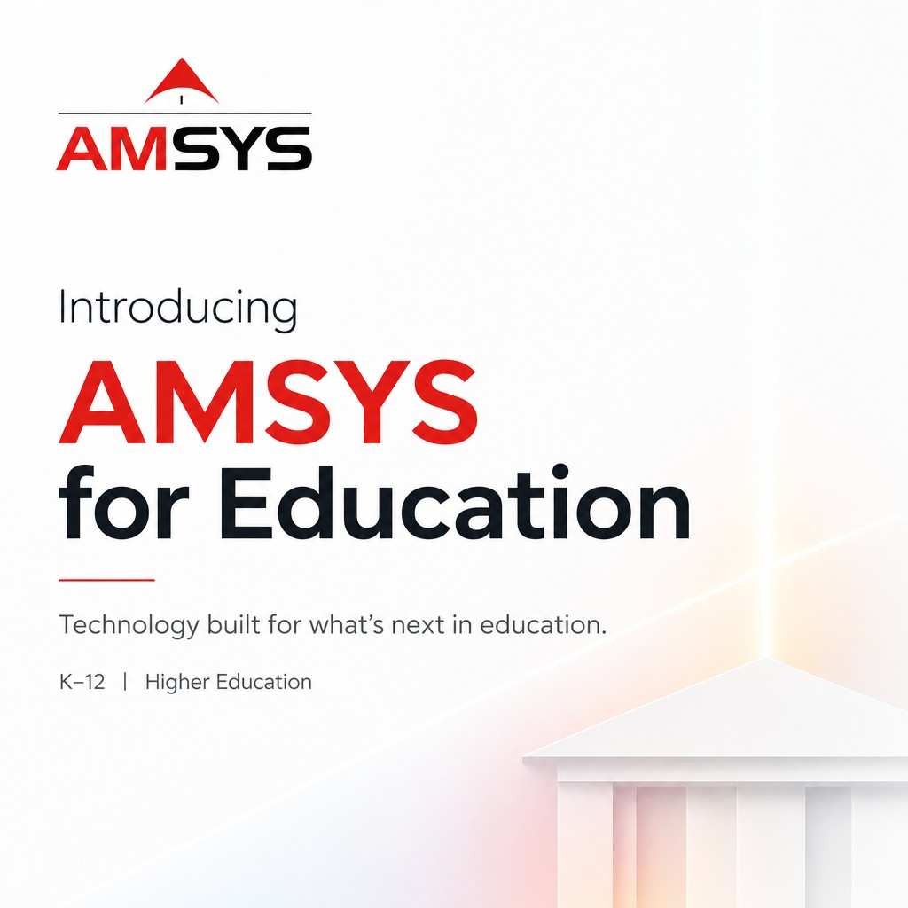

Ninety-four percent of higher-ed employees are already using AI tools at work. Only 54% know whether their institution even has a policy governing that use. That's according to EDUCAUSE's January 2026 report on AI and the higher ed workforce, and it's the exact gap I built AMSYS for Education to close.
This week, AMSYS Group launched AMSYS for Education, a dedicated vertical for K-12 schools, colleges, and universities that are trying to adopt AI while still catching up on basic infrastructure and security. I asked Tony Moore, who has spent his career running technology inside universities rather than selling to them, to lead it.
Why Education Needed Its Own AMSYS Vertical
Every sector we serve is under pressure to modernize. Education is under more pressure than most, because the same institution must secure increasingly complex systems, adopt AI responsibly, and prepare students for a labor market that's shifting under their feet, all with a fraction of an enterprise IT budget.
That requires more than another point of solution. It requires governance, data, infrastructure, security, and people moving together instead of separate line items, which is exactly what generic vendors aren't built to coordinate.
Leading With Someone Who's Lived Inside the Problem
Tony Moore isn't a vendor who studied higher education from the outside. He was Executive Director of IT at the University of Arizona, where he ran a $26 million annual technology portfolio and a 140-person IT organization. Before that, he was CIO at Prairie View A&M University and held technology leadership roles at Xavier University of Louisiana and Southern University and A&M College. His earlier career included stops at HP, AT&T, and IBM.
Moore has said education is at an inflection point: AI can change how institutions teach, research, and operate, but only if the underlying foundation, governance, data, infrastructure, security, people, is ready for it. That's the operating premise behind everything this vertical does.
What AMSYS for Education Covers
The vertical is built around six focus areas:
- AI governance and readiness, policy, oversight, and responsible adoption frameworks
- Cybersecurity and campus safety, protecting both data and physical campus environments
- Network, cloud, data center, and device modernization, the infrastructure layers everything else depends on
- Managed IT operations, day-to-day systems support institutions can't staff up for alone
- Technology staffing, filling specialized roles institutions struggle to hire and retain
- Workforce development, building the internal capability to sustain all the above
Three specialized offerings sit on top of that foundation: CampusShield™, a managed physical security and technology optimization program; academic cyber ranges and threat simulation labs for hands-on security training; and intelligent campus command centers that connect real-time facilities monitoring with applied STEM learning.
K-12 and Higher Ed Don't Get the Same Playbook
Districts and universities have different funding models and different constraints, so AMSYS for Education doesn't treat them the same way.
For K-12 schools and districts, the focus is AI governance, managed services, cybersecurity, CTE lab development, staffing, and hardware lifecycle programs, built with E-Rate and Title funding pathways in mind. For colleges and universities, the scope widens enterprise and academic technology environments: AI, applications, identity and access management, networks, cloud and data centers, campus security, research computing, and workforce programs.
Where to See This in Action
Moore will speak at Southern University's Dr. Leroy C. Roquemore Computer Science Symposium on September 17, 2026, in Baton Rouge, Louisiana, on human-AI interaction and where the opportunities and challenges actually sit for institutions moving in this direction.
This is the same operating logic behind every AMSYS vertical, technology, healthcare, insurance, hospitality, and energy included: pair deep operator experience with the full technology lifecycle instead of selling institutions another disconnected tool. Education just happens to be the sector where the gap between AI adoption and AI readiness is widest right now and were getting it right matters most.
If you're leading technology for a school, district, or university and want to talk through where your institution stands on AI readiness and security, AMSYS for Education is a good place to start that conversation.
Read the Press Release: AMSYS Launches AMSYS for Education, Led by Higher Education Technology Executive Tony Moore
If your institution is trying to modernize infrastructure, close security gaps, or build an actual AI governance plan instead of reacting to one tool at a time, AMSYS for Education can walk through where you stand today. Reach out to the AMSYS team to start that conversation or follow along here for more on how we're thinking about AI readiness across the sectors we serve.
Contact AMSYS: https://amsysis.com/contact-us/
P: 713-484-7786
Khalid Parekh
CEO, AMSYS Group
Houston, Texas